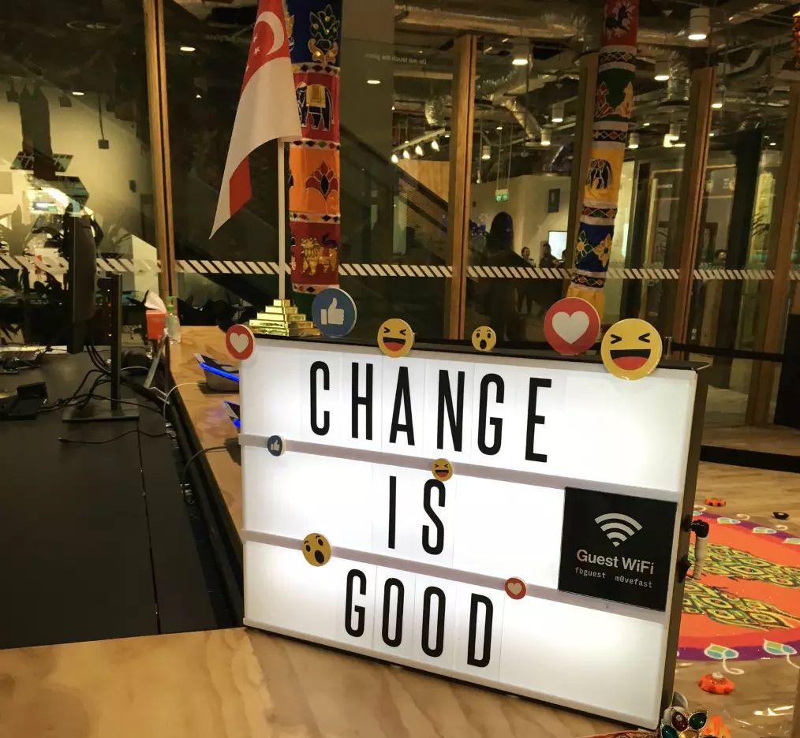

What did I learn?
The "Moving Fast" nature of our client's motto surely influenced me from the ground up. I was frustrated
at the beginning because I tended to consider carefully for the solutions I came up and only delivered until I
was about 95% certain to do so. However, in such rapid growing world, my approach was not always accepted. I was
very lucky to work with my past managers and team leaders, who taught me patiently and always willing to help me
speed up. Throughout the process, I gradually became much confident to deliver my solution quickly to the team
which was a huge takeaway I learned from this job :
Start quick, get a quick loss, then
revisit the problem and try another way fast, focus on the areas that need the most attention, and continue to improve.
Additionally, a smooth communication is always the best cataylst
to speed up the process. After all, no one will take action on my analysis unless I communicate well with the stakeholders.
A good analyst is not a number cruncher, data is just part of the materials to help structure the solution, yet it is always
the person who leverages the power of materials and build up the solution. Data is important, but not as much as people,
the lesson I learned was :
Analyze with logic ; Communicate with empathy.
The journey is full of many excitments, but as I am only able to reveal so much, I would encourage you to contact me If you
want to learn more details. Thank you very much.
"Change is good, it means you're fast!"
